#1120: [GA] Backfilling Total and Positive antigen tests from 2/18/21-3/2/18
Issue number 1120
jaclyde opened this issue on March 2, 2021, 11:10 PM PST
Labels Backfill Data quality
State: Georgia
Issue: Georgia started posting Total antigen tests and Positive antigen tests on February 18, 2021, so we are backfilling the values through to March 2, 2021 from screenshots.
Comments
Values added: Changes (6).txt
#1120: [GA] Backfilling Total and Positive antigen tests from 2/18/21-3/2/18
Issue number 1120
jaclyde opened this issue on March 2, 2021, 11:10 PM PST
Labels Backfill Data quality
State: Georgia
Issue: Georgia started posting Total antigen tests and Positive antigen tests on February 18, 2021, so we are backfilling the values through to March 2, 2021 from screenshots.
Comments
Sources:
| Date | Totals | Positive | Screenshot |
|---|---|---|---|
| 3/2/21 | 1422062 | 163820 | https://covid-tracking-project-data.s3.us-east-1.amazonaws.com/state_screenshots/GA/GA-20210302-172206.png |
| 3/1/21 | 1406064 | 162411 | https://covid-tracking-project-data.s3.us-east-1.amazonaws.com/state_screenshots/GA/GA-20210301-171947.png |
| 2/28/21 | 1397752 | 161352 | https://covid-tracking-project-data.s3.us-east-1.amazonaws.com/state_screenshots/GA/GA-20210228-172122.png |
| 2/27/21 | 1390595 | 160451 | https://covid-tracking-project-data.s3.us-east-1.amazonaws.com/state_screenshots/GA/GA-20210227-171959.png |
| 2/26/21 | 1375548 | 159339 | https://covid-tracking-project-data.s3.us-east-1.amazonaws.com/state_screenshots/GA/GA-20210226-172451.png |
| 2/25/21 | 1360896 | 158218 | https://covid-tracking-project-data.s3.us-east-1.amazonaws.com/state_screenshots/GA/GA-20210225-172210.png |
| 2/24/21 | 1350009 | 157551 | https://covid-tracking-project-data.s3.us-east-1.amazonaws.com/state_screenshots/GA/GA-20210224-172156.png |
| 2/23/21 | 1333372 | 156556 | https://covid-tracking-project-data.s3.us-east-1.amazonaws.com/state_screenshots/GA/GA-20210223-172225.png |
| 2/22/21 | 1318989 | 155590 | https://covid-tracking-project-data.s3.us-east-1.amazonaws.com/state_screenshots/GA/GA-20210222-171900.png |
| 2/21/21 | 1316079 | 155284 | https://covid-tracking-project-data.s3.us-east-1.amazonaws.com/state_screenshots/GA/GA-20210221-172029.png |
| 2/20/21 | 1312100 | 154830 | https://covid-tracking-project-data.s3.us-east-1.amazonaws.com/state_screenshots/GA/GA-20210220-172310.png |
| 2/19/21 | 1300188 | 154024 | https://covid-tracking-project-data.s3.us-east-1.amazonaws.com/state_screenshots/GA/GA-20210219-172522.png |
| 2/18/21 | 1280884 | 152547 | https://covid-tracking-project-data.s3.us-east-1.amazonaws.com/state_screenshots/GA/GA-20210218-172443.png |
Values added: Changes (6).txt
#1087: [GA] Capture "antigen positive cases" as probable cases
Issue number 1087
jaclyde opened this issue on February 3, 2021, 1:47 PM PST
Labels Data quality
State: Georgia
Issue: Moving Georgia's anitgen positive cases (which were added here) to probable cases.
Comments
Expected change in lumped: 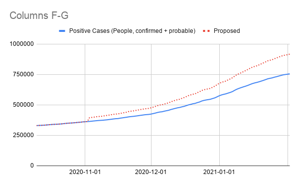
#1087: [GA] Capture "antigen positive cases" as probable cases
Issue number 1087
jaclyde opened this issue on February 3, 2021, 1:47 PM PST
Labels Data quality
State: Georgia
Issue: Moving Georgia's anitgen positive cases (which were added here) to probable cases.
Comments
Expected change in lumped:
#1082: Removing values from the API field Negative from AK, CA, DC, GA, KY, NY, OH, OR, TX, VA and WA
Issue number 1082
jaclyde opened this issue on January 27, 2021, 3:13 PM PST
Labels Data quality
States: Alaska, California, Washington DC, Georgia, Kentucky, New York, Ohio, Oregon, Texas, Virginia, Washington
Issue: We are removing negatives that were created from mixed units (specimens minus cases or test encounters minus cases) for states that are using explicit totals in our main total test results field (called totalTestResults in the API). See the Data FAQ for additional explanation.
Comments
Alaska: Never reported negatives directly and always reported in specimens, removing total time series
Values Removed: Changes.txt
California: Never reported negatives directly, but did report in Total tests (people) until April 21, 2020. Removing time series from present to April 22, 2020.
Values Removed: Changes.txt
Washington DC: Never reported negatives directly, and has always reported encounters, removing total time series
Values Removed: Changes.txt
Georgia: Never reported negatives directly and always reported in specimens, removing total time series
Values Removed: Changes.txt
Kentucky: Never reported negatives directly and always reported in specimens, removing total time series
Values Removed: Changes.txt
New York: Never reported negatives directly and always reported in encounters, removing total time series
Values Removed: Changes.txt
Ohio: Never reported negatives directly and always reported in specimens, removing total time series
Values Removed: Changes.txt
Oregon: Never reported negatives directly, but did report in Total tests (people) until December 1, 2020. Removing time series from present to December 2, 2020.
Values Removed: Changes.txt
Texas: Never reported negatives directly and always reported in specimens, removing total time series
Values Removed: Changes.txt
Virginia: Never reported negatives directly and always reported in encounters, removing total time series
Values Removed: Changes.txt
Washington: Negatives were backfilled with values calculated from total tests (encounters)-confirmed cases in August 2020. Removing total time series.
Values Removed: Changes.txt
#1082: Removing values from the API field Negative from AK, CA, DC, GA, KY, NY, OH, OR, TX, VA and WA
Issue number 1082
jaclyde opened this issue on January 27, 2021, 3:13 PM PST
Labels Data quality
States: Alaska, California, Washington DC, Georgia, Kentucky, New York, Ohio, Oregon, Texas, Virginia, Washington
Issue: We are removing negatives that were created from mixed units (specimens minus cases or test encounters minus cases) for states that are using explicit totals in our main total test results field (called totalTestResults in the API). See the Data FAQ for additional explanation.
Comments
Alaska: Never reported negatives directly and always reported in specimens, removing total time series
Values Removed: Changes.txt
California: Never reported negatives directly, but did report in Total tests (people) until April 21, 2020. Removing time series from present to April 22, 2020.
Values Removed: Changes.txt
Washington DC: Never reported negatives directly, and has always reported encounters, removing total time series
Values Removed: Changes.txt
Georgia: Never reported negatives directly and always reported in specimens, removing total time series
Values Removed: Changes.txt
Kentucky: Never reported negatives directly and always reported in specimens, removing total time series
Values Removed: Changes.txt
New York: Never reported negatives directly and always reported in encounters, removing total time series
Values Removed: Changes.txt
Ohio: Never reported negatives directly and always reported in specimens, removing total time series
Values Removed: Changes.txt
Oregon: Never reported negatives directly, but did report in Total tests (people) until December 1, 2020. Removing time series from present to December 2, 2020.
Values Removed: Changes.txt
Texas: Never reported negatives directly and always reported in specimens, removing total time series
Values Removed: Changes.txt
Virginia: Never reported negatives directly and always reported in encounters, removing total time series
Values Removed: Changes.txt
Washington: Negatives were backfilled with values calculated from total tests (encounters)-confirmed cases in August 2020. Removing total time series.
Values Removed: Changes.txt
#1022: [GA] The state fixed an error in their hospitalized PUI value on 12/18
Issue number 1022
whobody opened this issue on December 19, 2020, 12:24 PM PST
GA
They had an accidental additional 1069 PUI's on 12/18.
We need to patch 12/18 with the fixed data
https://covid-tracking.slack.com/archives/C01B0EGJ3J9/p1608396800220900
https://services7.arcgis.com/Za9Nk6CPIPbvR1t7/arcgis/rest/services/Join_Features_to_GHA_Regions_Admin/FeatureServer/0/query?where=1%3D1&objectIds=&time=&geometry=&geometryType=esriGeometryEnvelope&inSR=&spatialRel=esriSpatialRelIntersects&resultType=standard&distance=0.0&units=esriSRUnit_Meter&returnGeodetic=false&outFields=ObjectId%2CCOVID_Patients%2CEntry_Date&returnGeometry=false&returnCentroid=false&featureEncoding=esriDefault&multipatchOption=xyFootprint&maxAllowableOffset=&geometryPrecision=&outSR=&datumTransformation=&applyVCSProjection=false&returnIdsOnly=false&returnUniqueIdsOnly=false&returnCountOnly=false&returnExtentOnly=false&returnQueryGeometry=false&returnDistinctValues=false&cacheHint=true&orderByFields=Entry_Date+DESC&groupByFieldsForStatistics=Entry_Date&outStatistics=%5B%7B%27statisticType%27%3A+%27sum%27%2C+%27onStatisticField%27%3A+%27COVID_Patients%27%7D%2C+%7B%27statisticType%27%3A+%27sum%27%2C+%27onStatisticField%27%3A+%27Patients_Under_Investigation%27%7D%5D&having=&resultOffset=0&resultRecordCount=4000&returnZ=false&returnM=false&returnExceededLimitFeatures=true&quantizationParameters=&sqlFormat=none&f=html&token=
Comments
#987: [GA] Removing calculated PCR Test Negatives
Issue number 987
jaclyde opened this issue on November 30, 2020, 8:09 PM PST
Labels Data quality
State: Georgia
Issue: CTP has been calculating negative PCR tests from GA's Total PCR tests - Positive PCR tests. We are removing this metric.
Comments
This issue has been automatically marked as stale because it has not had recent activity. It will be closed if no further activity occurs. Thank you for your contributions!
This issue has been closed because it was stale for 15 days, and there was no further activity on it for 10 days. You can feel free to re-open it if the issue is important, and label it as "not stale."
This was done.
#949: [GA] Update PCR testing metric to remove lumped antibody tests
Issue number 949
space-buzzer opened this issue on November 13, 2020, 12:55 PM PST
Labels Data quality
Earlier in the pandemic, GA was publishing a single testing metric that lumped together both PCR and antibody testing. Recently, GA started providing a data download file (https://ga-covid19.ondemand.sas.com/docs/ga_covid_data.zip) with a full time series for PCR tests and results. We can use this file to correctly fill the PCR tests series to include only PCR tests.
Comments
This was updated on Nov 13th, 2020. From a data file downloaded from GA on Oct-22nd 2020. Edit batch 541 GA - PCR tests and pos update 20201113.csv.txt
#926: [GA] Antigen Positive Cases
Issue number 926
karaschechtman opened this issue on November 4, 2020, 2:23 PM PST
Labels Data quality
State or US: GA
Describe the problem GA added 29,937 antigen positive cases yesterday. We should record 29,937 antigen positive cases in our Positive Antigen Tests (People) field on November 3 until we get clarity about whether these numbers are getting revised in the manner of probable cases upon PCR testing/a timeseries.
Link to data source https://covidtracking.com/screenshots/GA/GA-20201103-171638.png
Comments
#925: [GA] Patch 11/3 Total, confirmed, and probable deaths
Issue number 925
hmhoffman opened this issue on November 4, 2020, 12:33 PM PST
State: GA
Dates affected: 11/3
Describe the issue: On 11/3 GA added confirmed and probable deaths to their dashboard. We should patch 11/3 confirmed and probable deaths, and edit total deaths to be {confirmed deaths + probable deaths}. We will begin capturing confirmed and probable deaths during our daily publish shifts on 11/4
Comments
BEFORE: 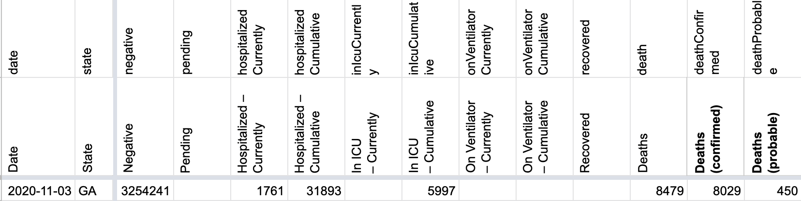
AFTER: 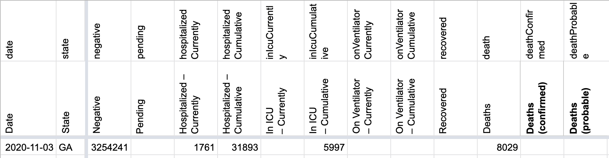
#912: [GA] Backfilling a missed update on 10/21
Issue number 912
the-daniel-lin opened this issue on October 23, 2020, 12:19 PM PDT
Labels Backfill Data quality
State or US: Georgia
Describe the problem On 10/21, GA did not update their website, but we were able to record a Currently Hospitalized update.
Link to data source Data download from their main website: https://ga-covid19.ondemand.sas.com/docs/ga_covid_data.zip
Comments
BEFORE: 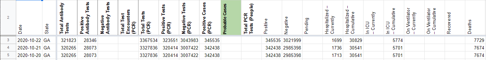
AFTER: 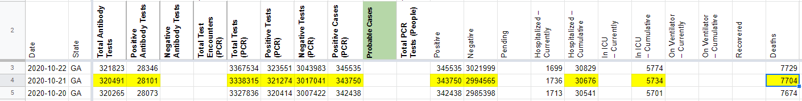
#879: [GA] Patch 9/24 Negatives
Issue number 879
hmhoffman opened this issue on October 1, 2020, 7:05 AM PDT
State: GA
Dates affected: 9/24
Describe the issue: On 9/24 the neg. calc. for GA was entered incorrectly. We accidentally subtracted positive test pcr, when we should have subtracted positive cases pcr. We need to patch this metric.
Links: https://covid-tracking.slack.com/archives/C01B0EGJ3J9/p1601066257023400
Comments
BEFORE: 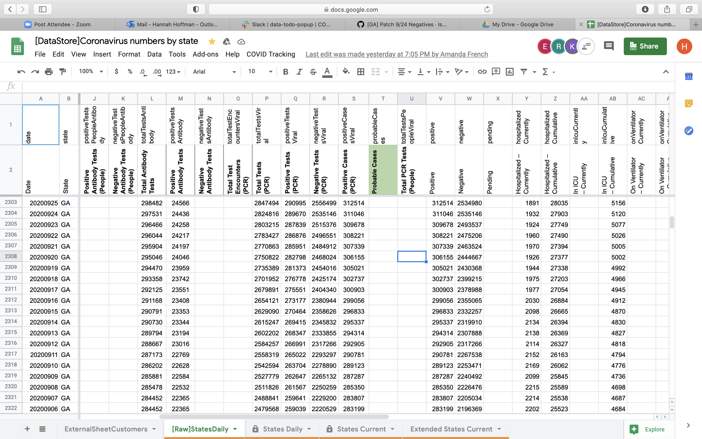
AFTER:
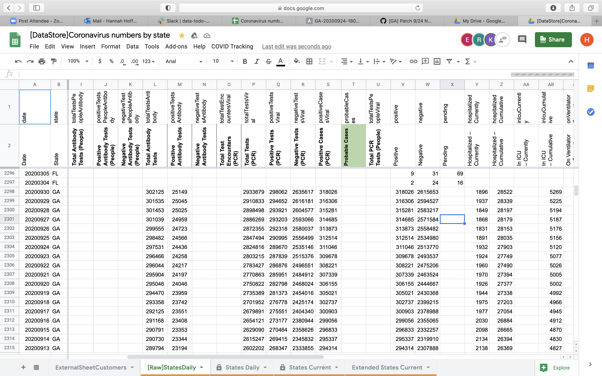#791: [GA] Deleting calculated negative serology values
Issue number 791
the-daniel-lin opened this issue on August 26, 2020, 7:56 AM PDT
Labels Data quality Historical Data
State or US: Georgia
Describe the problem On 6/7, CTP began calculating negative serology results. We are deleting this calculation.
Comments
BEFORE:
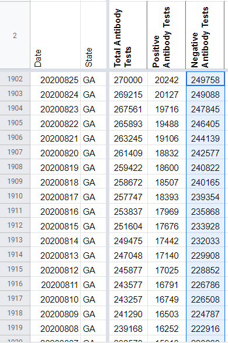
AFTER:
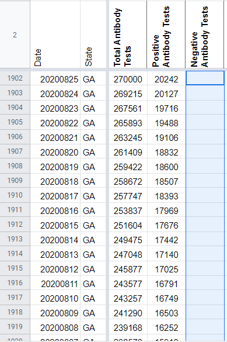
Values deleted: 249758 249088 247845 246405 244139 242577 240822 240165 239354 235868 233928 232033 229908 228852 226786 226508 224787 222916 220660 218459 216414 214477 214348 212535 210412 208075 205981 203937 203216 202784 200340 198530 196050 192963 191418 191212 190956 188675 186101 183223 181191 177492 176597 176430 173727 171096 168075 165798 162826 162044 161854 161467 159209 155695 152838 149415 149076 148846 145700 143853 140811 138045 135244 134772 134569 132677 130180 126461 114169 111514 111178 111016 108958 106774 104321 101813 99259 98953 98810 96554
#765: [GA] Deaths not updated on 8/4
Issue number 765
brianskli opened this issue on August 14, 2020, 11:53 AM PDT
Labels Historical Data Missing Data
State or US: Georgia
Describe the problem Deaths were not updated on 8/4.
Link to data source 8/3: https://covidtracking.com/screenshots/GA/GA-20200803-180743.png 8/4: https://covidtracking.com/screenshots/GA/GA-20200804-180737.png 8/5: https://covidtracking.com/screenshots/GA/GA-20200805-180731.png
Comments
Using the 8/4 screenshot, the death count was updated.
Before: 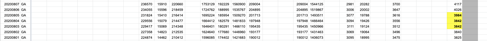 After: 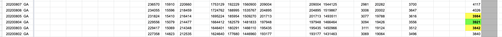
#736: [GA] [LA] Negative Values for number of "New Tests"
Issue number 736
Stayerbear opened this issue on August 5, 2020, 12:02 PM PDT
Labels Historical Data stale
State or US: Georgia, Louisiana
Describe the problem GA has -74,189 new tests on May 27. All quantity of tests should be a positive value. LA has -2,651 new test on April 19. Negative values have caused the 7-day average to scale to 300% make the rest of the 7-day average a flat line at the bottom.
Link to data source https://coronavirus.jhu.edu/testing/individual-states/georgia https://covidtracking.com/data/state/georgia#historical https://covidtracking.com/data/state/louisiana#historical
Comments
This issue has been automatically marked as stale because it has not had recent activity. It will be closed if no further activity occurs. Thank you for your contributions!
I missed DC... it also has -11,188 on May 25.
This issue has been automatically marked as stale because it has not had recent activity. It will be closed if no further activity occurs. Thank you for your contributions!
This issue has been closed because it was stale for 15 days, and there was no further activity on it for 10 days. You can feel free to re-open it if the issue is important, and label it as "not stale."
#672: [GA] Georgia situation reports have hospitalization data back to 1 May
Issue number 672
MattHilliard opened this issue on July 25, 2020, 3:57 AM PDT
Labels Data quality
State or US: GA
Describe the problem The COVID Tracking Project's current hospitalization data for Georgia goes back to 16 May. However, Georgia's Situation Reports began including this number starting on 1 May. Once 16 May comes around, the numbers in these reports exactly matches CTP's number.
The exception is that there are two days after 16 May where CTP retained the previous day's current hospitalization: 21 May and 21 June but the Situation Reports have a new value. There's no documentation of what happened 21 May, but on 21 June Georgia's dashboard wasn't working during the data entry shift and the other columns Georgia reports were backfilled later.
Link to data source https://gema.georgia.gov/document/document/sitrep-320-723/download
Comments
I have a spreadsheet with the old States Daily column, numbers from the Situation Reports, and the new column. I didn't pull in all the numbers from the Situation Reports, just the ones we were missing (5/1 - 5/15, 5/21, and 6/21) and a few overlapping days where applicable to demonstrate the data source is perfectly aligned with our existing data.
Before: 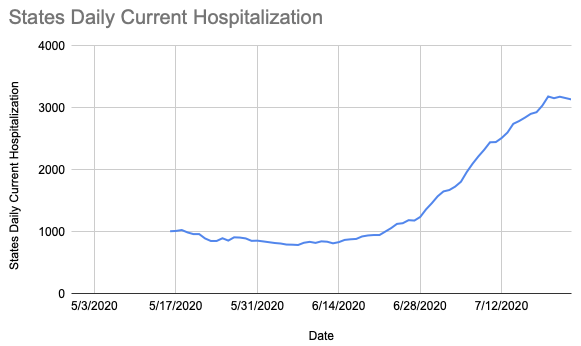
After: 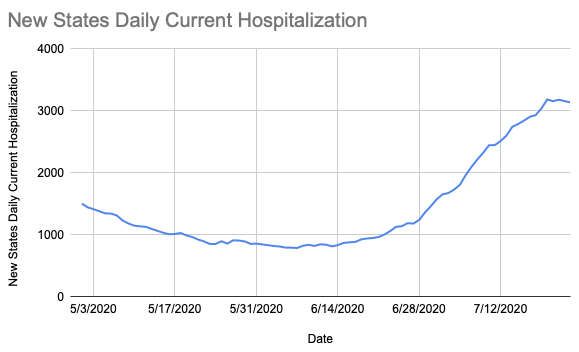
Overlaid data: 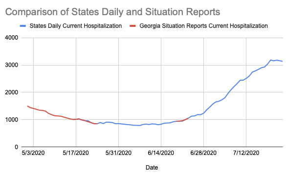
#660: [GA] Remove values for Total Tests (PCR) before 5/27
Issue number 660
muamichali opened this issue on July 23, 2020, 10:01 AM PDT
Labels Backfill Data quality stale
State or US: Georgia
Describe the problem Previous contributors (MM) back-filled the Total Tests (PCR) with the values provided by GA at that time, but GA was lumping PCR and Antibody tests until 5/27 so these values should be removed.
Link to data source
Comments
This issue has been automatically marked as stale because it has not had recent activity. It will be closed if no further activity occurs. Thank you for your contributions!
This issue has been closed because it was stale for 15 days, and there was no further activity on it for 10 days. You can feel free to re-open it if the issue is important, and label it as "not stale."
This issue has been automatically marked as stale because it has not had recent activity. It will be closed if no further activity occurs. Thank you for your contributions!
This issue has been closed because it was stale for 15 days, and there was no further activity on it for 10 days. You can feel free to re-open it if the issue is important, and label it as "not stale."
#659: [GA] Pub Shift missed a late testing update 4/29
Issue number 659
the-daniel-lin opened this issue on July 23, 2020, 9:44 AM PDT
Labels Backfill Historical Data not stale
State or US: GA
Describe the problem GA updated their testing a few hours late, causing us to have a lower testing value and an artificially high postivity %.
Link to data source
Screenshot from 4/29 morning:

Screenshot from after the pub shift:

Comments
BEFORE 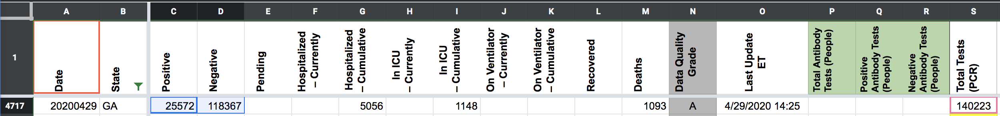
AFTER 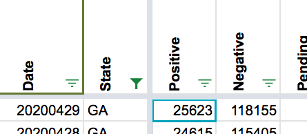
This issue has been automatically marked as stale because it has not had recent activity. It will be closed if no further activity occurs. Thank you for your contributions!
#635: [GA] 6/17 timestamp inaccurate
Issue number 635
brianskli opened this issue on July 15, 2020, 11:46 AM PDT
6/17 shows an update date of 6/15 when the update was current as of 6/17
Comments
To resolve, state screenshots were reviewed. 6/17's timestamp changed to 6/17/2020 14:50:00 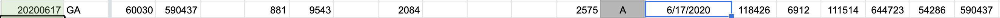 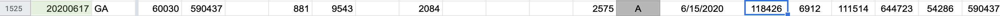
.
#533: [GA] PCL Historicals and WS2
Issue number 533
jesseandersonumd opened this issue on June 25, 2020, 7:57 AM PDT
Labels PCL/SVP Historicals
Death values are historically recorded in both the "Deaths" and "Deaths (Confirmed)" columns for GA. However, GA’s death values are unclear about what they represent, so they should only be recorded in the main "Deaths" field.
5/12: CTP started to report values in both deaths (confirmed) and deaths.
Comments
Confirmed they matched what we already had in "Deaths", then removed "Deaths (confirmed)" for GA between today and 5/12 when they were first recorded.
(Jesse updated the source note for Deaths (confirmed) and the private note this morning)
DC'ed by JJA 6/26 10:00:00 a.m. ET
#462: [GA Historicals] Negative Tests shown on 5/27 because the states separated serology and PCR
Issue number 462
muamichali opened this issue on May 28, 2020, 7:50 AM PDT
Labels Data quality stale

Comments
This issue has been automatically marked as stale because it has not had recent activity. It will be closed if no further activity occurs. Thank you for your contributions!
This issue has been closed because it was stale for 15 days, and there was no further activity on it for 10 days. You can feel free to re-open it if the issue is important, and label it as "not stale."
#436: [Historical GA] Trend on state website not matching our trends
Issue number 436
qpmnguyen opened this issue on May 20, 2020, 11:27 AM PDT
Labels Data quality not stale
Possible revision of historicals by the GA
Comments
This issue has been automatically marked as stale because it has not had recent activity. It will be closed if no further activity occurs. Thank you for your contributions!
We need to add this to our historical clean-up list
https://app.frontapp.com/open/msg_dme1zv5
This issue has been automatically marked as stale because it has not had recent activity. It will be closed if no further activity occurs. Thank you for your contributions!
This issue has been automatically marked as stale because it has not had recent activity. It will be closed if no further activity occurs. Thank you for your contributions!
This issue has been closed because it was stale for 15 days, and there was no further activity on it for 10 days. You can feel free to re-open it if the issue is important, and label it as "not stale."
#313: GA Data is "N/A".
Issue number 313
dcorbin opened this issue on April 27, 2020, 1:37 PM PDT
Labels Data quality
GA has change the format of it's dashboard as of today and many covid-tracking fields are "N/A" where I don't think they used to be.
(I looked and did not see a duplicate issue)
Comments
I noticed the total Deaths was wrong too. Currently it says 942 on GA site, but here it says 971. I think GA has put their dashboard at a different url: https://dph.georgia.gov/covid-19-daily-status-report.
I concur. They've moved change the URL to https://dph.georgia.gov/covid-19-daily-status-report and it _appears very different, with more charts. I don't know how much different it is structurally.
This issue has been automatically marked as stale because it has not had recent activity. It will be closed if no further activity occurs. Thank you for your contributions!
Thanks @dcorbin ! We are now referring to the updated dashboard for the GA data.
#247: GA data discrepancy (~ APR 20)
Issue number 247
dcorbin opened this issue on April 21, 2020, 9:45 AM PDT
Labels Data source
On Apr 20, in Georgia, you're data table shows about ~ 700 new cases. I looked at the source page for that data (also visible in the screen shots). The only place on that page that I can find to extract a "new cases" is from a chart (hover), and it is showing 36 new cases. I strongly suspect there is a data inconsistency on the source page, but I need more information on how the GA data is extracted from that page.
Comments
Hi @dcorbin
Thanks for writing The Georgia source page shows a total of 18,301 cases on 4/19 https://covidtracking.com/screenshots/GA/GA-20200419-180551.png
and a total of 18,947 cases on 4/20 https://covidtracking.com/screenshots/GA/GA-20200420-180537.png
18,947-18301 = 646 https://covidtracking.com/data/state/georgia#historical
#164: GA negative test results decreased
Issue number 164
webmasterkai opened this issue on April 7, 2020, 10:09 AM PDT
There seems to be an error in the Georgia history data between 6 Apr 2020 and the current (7 Apr) data. The negative test results decreased by about 9,000.
Comments
@webmasterkai It looks like the higher 4/6 number was a data entry error. I am going to update the historical data.

Sources: